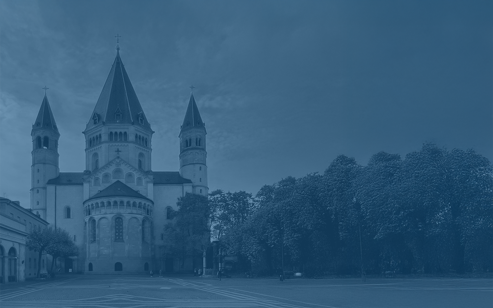
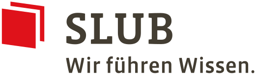
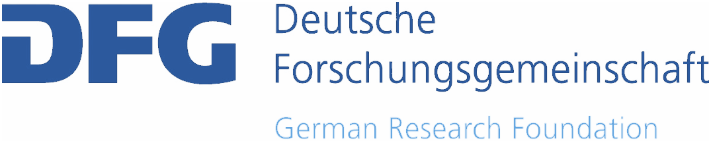

Igor Bajena
Hochschule Mainz – University of Applied Sciences
Organising Committee

Documentation, Publication and Preservation
of the Digital 3D Heritage on the Web
14–16 September 2026 in Mainz, Germany
Conference of the second funding phase
of the DFG 3D-Viewer project
FAIR 3D Heritage is a conference focused on improving how digital 3D cultural heritage can be documented, published, and preserved on the Web. It responds to the rapid growth of 3D reconstructions, scans, and models across libraries, archives, museums, and research projects by promoting interoperable workflows, robust metadata and paradata, and sustainable infrastructures that support FAIR and TRUST-aligned practices.
By bringing together researchers, heritage professionals, infrastructure providers, and software developers, FAIR 3D Heritage fosters a collaborative environment to exchange methods, tools, and best practices—from web/XR viewer ecosystems and linked-data integration to repository strategies and long-term preservation. The conference provides a platform to share results, discuss challenges, and strengthen a shared foundation for reusable, future-proof 3D heritage data.
The conference will be held in Mainz (Germany) on 14–16 September 2026 at the LUX Pavilion (Hochschule Mainz – University of Applied Sciences), the event also serves as a final presentation and critical reflection of the second funding phase of the DFG 3D-Viewer project, positioning its results within the broader landscape of digital 3D heritage infrastructures.
Thanks to the support of the German Research Foundation (Deutsche Forschungsgemeinschaft DFG), we can offer:
There will be no conference fee, but registration is mandatory so that we can plan catering and event space.
The conference will be hosted at the LUX Pavilion of the Hochschule Mainz – University of Applied Sciences, Ludwigsstraße 2, 55116 Mainz, Germany. An excursion to local cultural heritage sites is planned as part of the programme. The event is planned on-site only.

Funded by:

Hochschule Mainz – University of Applied Sciences
Hochschule Mainz – University of Applied Sciences
Friedrich Schiller University Jena
Friedrich Schiller University Jena
Saxon State and University Library Dresden (SLUB)
Saxon State and University Library Dresden (SLUB)
University of Porto
Lund University
Friedrich Schiller University Jena
TIB – Leibniz Information Centre for Science and Technology
University and State Library Darmstadt, Technical University of Darmstadt
University of Cambridge
Texas Tech University
Technical University of Darmstadt
Friedrich Schiller University Jena
IUAV University of Venice Alma Mater Studiorum – University of Bologna
RWTH Aachen University
Germanisches Nationalmuseum Interessengemeinschaft für Semantische Datenverarbeitung e.V.
Igor Bajena is a researcher at the Institute of Architecture, Hochschule Mainz – University of Applied Sciences (AI MAINZ), working at the intersection of digital cultural heritage, architectural history, 3D reconstruction and research infrastructures. Trained as an architect, he completed his PhD in Architecture and Design Cultures at the University of Bologna with a dissertation on digital 3D reconstruction as a research environment for art and architectural history.
His research focuses on the documentation, publication and reuse of digital 3D reconstructions, with particular attention to metadata, paradata, CIDOC CRM-based modelling, semantic repositories and web-based publication workflows. In the DFG 3D-Viewer project, he contributes to the development of documentation and interoperability concepts for 3D cultural heritage data, including metadata models, repository workflows and community-oriented dissemination. Within FAIR 3D Heritage, he supports the organisation of the conference, programme development and the broader discussion on how 3D models can be made FAIR, traceable and scientifically reusable.
Piotr Kuroczyński is an architect specialising in digital 3D reconstruction, documentation and visualisation of cultural heritage. Since 2017 he has been Professor for Computer Science and Visualisation in Architecture at Hochschule Mainz – University of Applied Sciences. He previously researched and taught at the Technische Universität Darmstadt and coordinated projects at the Herder Institute for Historical Research on East Central Europe.
His work focuses on virtual research environments, semantic data modelling, heritage and historic Building Information Modelling, 3D modelling, documentation standards and publication workflows for digital 3D reconstructions. He is co-founder and convenor of the Digital 3D Reconstruction Working Group in the Digital Humanities in German-speaking Region Association and chief editor of the book series Computing in Art and Architecture at Heidelberg University Library. In FAIR 3D Heritage, his expertise frames the conference’s central questions on scholarly 3D models, sustainable infrastructures, publication practices and the scientific documentation of digital reconstructions.
Clemens Beck is affiliated with the Chair of Digital Humanities at Friedrich Schiller University Jena, led by Prof. Dr. Sander Münster. Since 2022, he has been working as a research associate at the Professorship for Digital Humanities at the same institution. Alongside his doctoral research, he serves as an editor of the Journal of Historical Network Research (JHNR). He also coordinates the DFG 3D-Viewer project and is involved in several additional infrastructure projects.
Sander Münster is Professor of Digital Humanities at Friedrich Schiller University Jena. He studied economics, history and educational science at TU Dresden and completed his doctorate in educational technology in 2014 with a dissertation on interdisciplinary cooperation in the creation of historical 3D reconstructions. In 2025, he completed his habilitation in media computing at the University of Regensburg with a thesis on digital 3D technologies for humanities research and education.
His research focuses on digital 3D reconstructions, 3D and 4D data ecosystems, 3D digitisation of cultural heritage, information systems for 3D models, visual research processes, digital infrastructures, informetrics and methodological change in image- and object-related digital humanities. In the context of FAIR 3D Heritage, his expertise is central to the conference’s focus on 3D cultural heritage infrastructures, standards, presentation, documentation, discourse integration and the long-term scholarly reuse of digital 3D models.
Roger Winkler is a research associate at the University and State Library Darmstadt, working on research data management and digital infrastructures for architecture, engineering, and construction. With a background in architecture and computational design, his work focuses on FAIR data workflows, metadata modelling, semantic technologies, and tools for structuring and publishing heterogeneous architectural research data. He contributes to NFDI4ING and the Architectural RDM-Pipeline project, bridging research practice, data management, and software development.
Ronald Haynes is a University of Cambridge Senior Computer Officer, liaison for 31 Colleges, the University Library and the Fitzwilliam Museum, and IT Community Development Manager. His research interests include the analytical and cultural potentials of 3D, XR and spatial technologies, as well as digital memory twins.
He is a Darwin College Bye-Fellow, Eckhart Society Trustee, and a member of BCS, ACM, the IEEE Computer Society and IAITI. Ronald co-chairs the IIIF 3D Technical Specification and Community Groups and contributes to COGEnT-HELD, a UK/US universities’ consortium for collaborative digital learning and development. He also serves as advisor and consultant for initiatives including DaSCH.Swiss, XRchiving.London, 3DFrame, Mnemosyne Research and SERIOUS3D.
Katherine E. [Katie] DeVet, Ph.D., is the Resource Sharing & Recording Studios Librarian at Texas Tech University. Holding a Ph.D. in Fine Arts from Texas Tech, Katie uses her diverse experiences to help colleagues and scholars in all disciplines find the resources they need for their research and use the technology available to assist with interdisciplinary collaboration across the world. Within the departments she oversees, she works to guide staff and student assistants to give excellent service to all patrons, both at Texas Tech and abroad. Through the SHAPES program [Sharing and Helping Academics Prepare for Educational Success], Katie and her colleagues worked to bring 3D data and models to the classroom, facilitating conversation and collaboration between 3D practitioners and non-practitioners. Katie continues to be interested in facilitating ease of access and discovery for all resource types, including 3D models, data sets, XR environments, and more.
Irene Cazzaro, architect and PhD, is currently a research fellow at the IUAV University of Venice and an adjunct professor at both the IUAV University of Venice and Alma Mater Studiorum – University of Bologna.
Her current research interests include the representation of architecture, morphology, morphogenesis and graphic design, between theoretical knowledge and practical outcomes. She also investigates digital 3D models of destroyed or unbuilt artefacts, with particular attention to uncertainty visualisation and to the development of widely accepted standards.